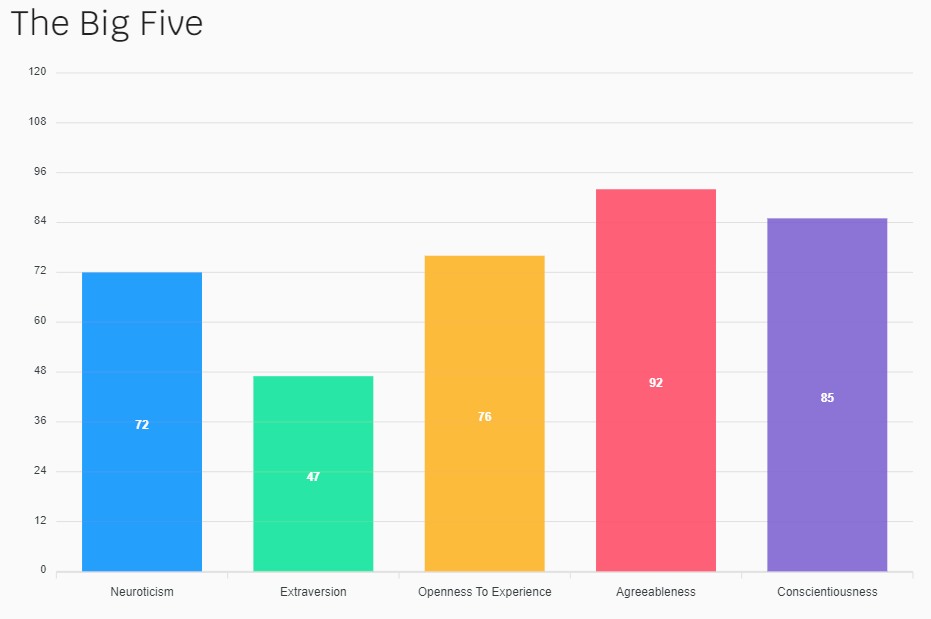

Myer’s Briggs Type Indicator
Turbulent Logician, or INTP-T (Introverted, Intuitive, Thinking, Prospecting, Turbulent)
16 personalitiesStrengths
- Analytical
- Original
- Open-minded
- Curious
- Objective
Weaknesses
- Disconnected
- Insensitive
- Dissatisfied
- Impatient
- Perfectionistic
Learning Style
I'm a very visual and auditory learner.
Education PlannerThe Big Five Factors
bigfive-test.com 
What do the results of these tests mean for you?
Overall, I think these results are highly accurate. I’m very withdrawn and prone to daydreams and frequent new fascinations, investing a great deal of time and effort into learning whatever I can about a given subject, eager to make discoveries or improve in some way.
How do you think these results may influence your behaviour in a team?
I think I’ll likely learn to coordinate well on group projects. It’s hard not to fall into my insecurities sometimes and I tend to feel inadequate, but if I’m entrusted with a task, I’ll do my best and be dedicated to getting it done on time. As I often get carried away, my time management isn’t great but hopefully being accountable to a group will help to be more organized. My openness to experience and new ways of doing things should be conducive to working well with others.
How should you take this into account when forming a team?
Ideally, I guess I would group up with someone orderly / someone comfortable taking the lead on things, to help provide direction and structure. I’ll have to make a conscious effort to remain focused, and on target, as curiosity can so easily lead me off on a tangent.